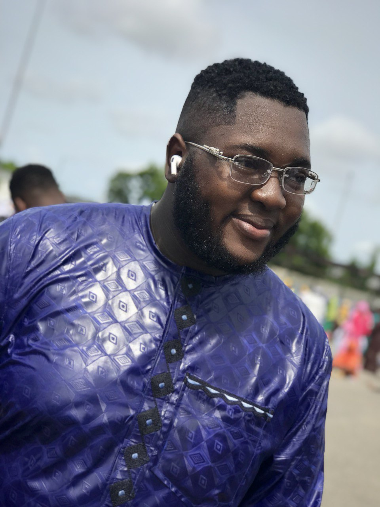

Animashaun Al-Fawaz .O
Hi, I'm Animashaun Oreoluwa. A Freelance UI/UX Designer based in Lagos, Nigeria.

My Achievements
- Creative Thinker & Designer
- Developed user-friendly and aesthetically pleasing product designs
- Embarked on a journey to become a full-stack web developer
Follow on Twitter